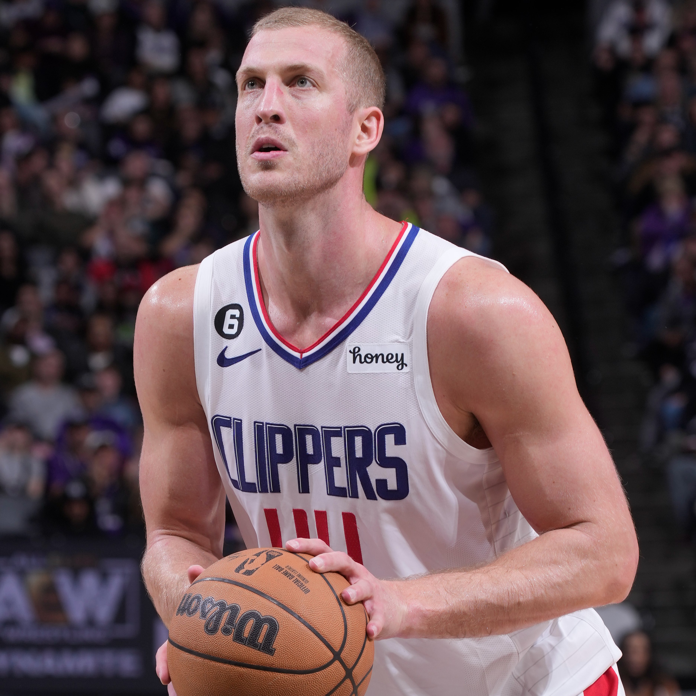

|
|
Los Angeles Clippers (disingkat menjadi LA Clippers) adalah sebuah tim basket profesional Amerika Serikat yang bermarkas di Los Angeles. Clippers berkompetisi di National Basketball Association (NBA) sebagai anggota Divisi Pasifik, Wilayah Barat. Clippers memainkan pertandingan kandang mereka di Staples Center—sebuah arena yang juga ditempati oleh tim NBA sekota Los Angeles Lakers, begitu pula oleh Los Angeles Sparks dari Women's National Basketball Association (WNBA), dan Los Angeles Kings dari National Hockey League (NHL).Tim ini didirikan pada tahun 1970 dengan nama Buffalo Braves, dan merupakan salah satu dari tiga tim baru yang bergabung dengan NBA pada tahun tersebut, bersama dengan Cleveland Cavaliers dan Portland Trail Blazers. Braves meraih beberapa kesuksesan dan mencapai babak playoff sebanyak tiga kali, dimotori oleh pemain peraih Most Valuable Player (MVP) NBA, Bob McAdoo. Adanya konflik dengan Canisius Golden Griffins menyangkut arena Buffalo Memorial Auditorium, serta penjualan tim ini membuat mereka pindah dari Buffalo, New York, ke San Diego, California. Pada tahun 1978, tim ini berganti nama menjadi San Diego Clippers, merujuk kepada nama kapal layar yang mirip dengan Teluk San Diego. Clippers tidak terlalu sukses selama enam tahun setelah kepindahan mereka ke San Diego meskipun mereka merekrut pemain bintang pada posisi center, Bill Walton. Walton melewati hampir tiga musim penuh karena cedera yang dialaminya setelah pindah. Pada tahun 1981, tim ini dibeli oleh taipan real estate di Los Angeles, Donald Sterling. Pada tahun 1984, Clippers secara kontroversial dipindahkan ke Los Angeles oleh Sterling tanpa persetujuan dari NBA. Meskipun ada denda dan tuntutan hukum terhadap kepemilikan tim ini oleh NBA yang berusaha mengembalikan Clippers ke San Diego, tim akhirnya diizinkan untuk menetap di Los Angeles. Setelah pindah ke Los Angeles, Clippers masih kesulitan menjalani musim reguler ataupun lolos ke babak playoff. Mereka sering dipandang sebagai contoh pecundang abadi dalam olahraga profesional Amerika, memunculkan perbandingan yang tidak menguntungkan terhadap rival sekota mereka yang lebih sukses secara historis, Lakers. Antara tahun 2008 dan 2017, Clippers berkembang setelah ketambahan para pemain seperti Blake Griffin, DeAndre Jordan, dan Chris Paul. Formasi ini membawa Clippers sebagai tim yang konsisten lolos ke babak playoff dan diberi julukan "Lob City". Pada musim 2012–2013 dan 2013–2014, Clippers memenangkan dua gelar divisi yang pertama untuk mereka. Mereka lolos ke babak playoff tujuh kali sejak tahun 2012 hingga 2019, menyamai jumlah penampilan playoff yang mereka capai dari tahun 1970 hingga 2011. Pada tahun 2019, Clippers merekrut pemain yang pernah dua kali meraih penghargaan MVP Final NBA, Kawhi Leonard, dan melakukan trade atas sejumlah kesempatan memilih pemain di draf demi memperoleh pemain langganan NBA All-Star, Paul George.
|
PAUL GORGE |
JAMES HARDEN |
 M.PULMLEE |
TERANCE MANN |
KAWHI LEONARD |